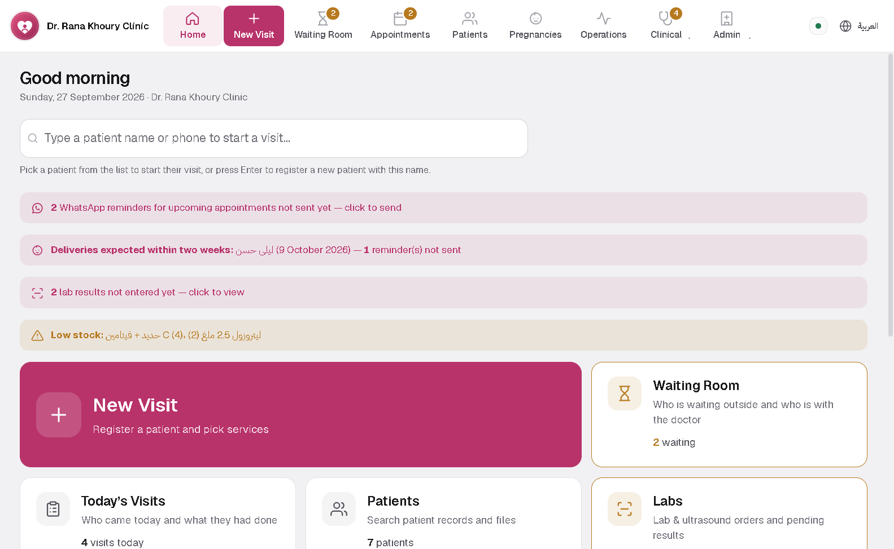
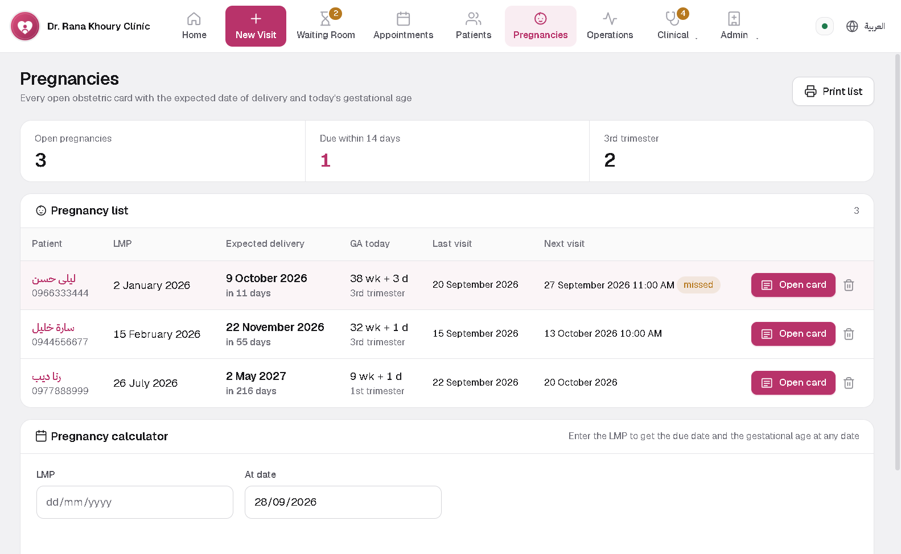
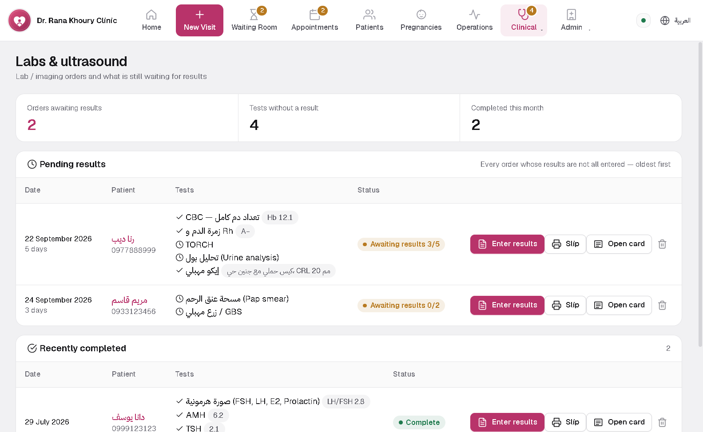
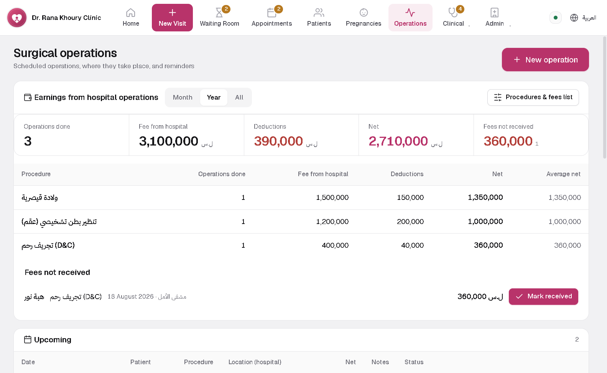

GynoDesk
The gynaecology and obstetric visit cards with the same fields as your paper form, pregnancy follow-up and due dates, labs and ultrasound, surgery and fees, and an archive of your old paper cards.
For tablet or phone. Download it on the device itself; Android will ask you to allow the install once.
How to install the Android appYour PC code is inside the app: Settings, then Software licence. Send it with the request and the activation code comes back to you.
Inside the program





What it does
Gynaecology and obstetric cards
The same fields as your paper: history, examination, diagnosis, management. An antenatal table and partogram, printed to A4 on your letterhead.
Pregnancy follow-up
Due date, gestational age and trimester come from the last period, and every pregnancy sits in one list with its due date.
Labs, ultrasound and prescriptions
Order from inside the visit; it stays pending until you enter the result. Prescriptions print on clinic letterhead.
Surgery and payments
The fee and your share for each operation. Reception sees who is waiting to pay and takes payment from their own screen.
Your old paper cards, archived
Photograph your old cards front and back with the tablet; they land in the patient file and are found by card number. Built for tens of thousands.
Tablets for doctor and reception
An Android tablet app that keeps working through a network drop and syncs what was entered once it is back.
Installing takes two minutes
No technical experience needed. Download the file, run it, open the program.
Download the file
Press the download button on the product page. The file lands in your Downloads folder.
Run the installer
Double-click it. If Windows shows a warning, choose "More info" then "Run anyway".
Open the program
It asks for your clinic name, doctor name and logo, and it is ready to use.
Installing the Android app
The app does not come from the Google Play store, so Android asks twice before installing it. That happens to any app from outside the store; it is not a virus warning.
Download it on the device itself
Open the product page on this site from the tablet or phone and press "Download the Android app". If the browser says the file might be harmful, choose "Download anyway".
Allow installs from this source
Open the file from the notification or from Downloads. Android says installs from this source are not allowed: tap "Settings", switch on "Allow from this source", then go back.
Get past the Play Protect scan
Tap "Install". If Play Protect offers to scan the app, tap "Scan app", wait a few seconds, then "Install". If it says "Blocked by Play Protect", tap "More details" then "Install anyway".
Open the app
Tap "Open". To connect to the clinic computer, the tablet must be on the same Wi-Fi network as the computer.
After installing you can switch "Allow from this source" off again in Settings. Some phones (Xiaomi, Samsung) show their own scan with slightly different button names: choose continue or install. If anything gets stuck, message me and I will walk you through it.


Not sure which one fits?
Send a message with your specialty and I will reply personally.